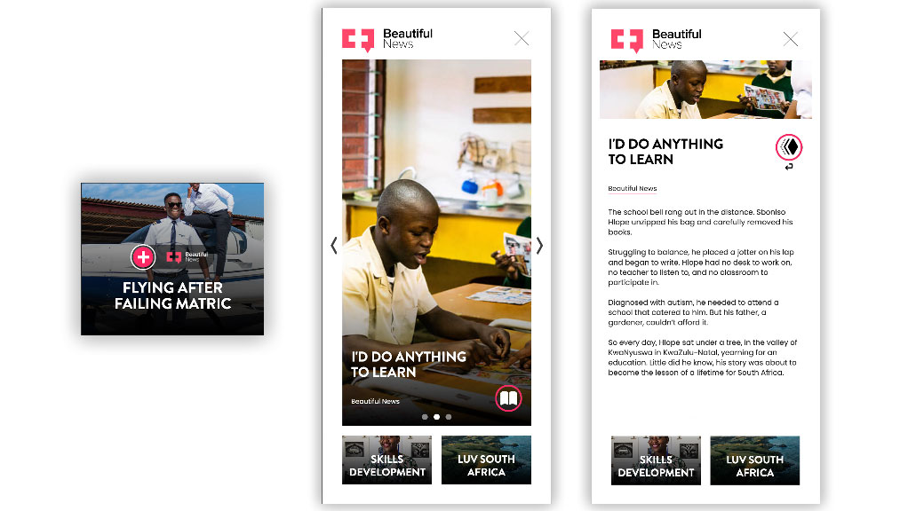
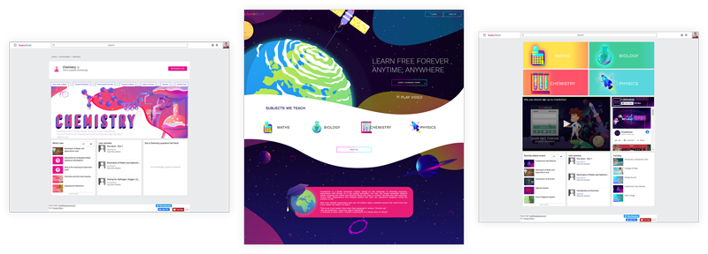

Digital Portfolio of
Cecil Juan Bouwer
As a seasoned front-end web developer and UX designer, my passion lies in crafting exceptional digital experiences. I have spent the past few years working in the Ad-Tech industry, building dynamic ads and custom solutions to enhance advertising effectiveness.
With a strong foundation in HTML, CSS, JavaScript, and data integration, I am dedicated to pushing the boundaries of digital design and user experience. Through my work, I aspire to leave a lasting impact on the audience and drive success for the brands I collaborate with.
HTML, CSS, Javascript, Vue.js, React.js, PHP, ExtendScript, AWS, Git, Jira, and CMS tools like Wordpress.
Adobe Site of the Day - Adobe
Best CSS Web Design - CSS Light
Web Development, ad-tech development with dynamic content and tracking.
A very clean and simple design that I designed in Adobe XD, then built with CSS Grid layout, a PHP contact form, and a CSS animation using the LottieFiles plugin.
Site design and development for the Oh My Art brand.
Site design and development for the Oh My Art brand.
Website development UX design for Fuse School including a launch video.
Site re-design, development and products video for the Rocketfuel brand.
Interactive digital magazine for Hospitality Marketplace.
Interactive digital magazine for Hospitality Marketplace.
Interactive digital magazine for Hospitality Marketplace.
Dynamic Ad-tech template with colour themes and reporting. This is an example of the latest project I have been working on, a 300 x 250 Google ad size as the unexpanded ad.
When the user clicks on the ad, it expands to full screen to show the rest of the content.
In this example, there are three content themes and three to four slides in each theme.
Each slide can have a video or image background with a short description, this is presented with a carousel slider. When you click on any of the slides, it expands to show more content like images and video as well as other HTML elements like forms and buttons.
On the bottom of the screen it shows buttons to go to the next content theme, this can be used to support brand stories or themes.
Ensuring efficiency and rapid turnaround, I automated the theme customization process through a .json file. This enables seamless content replacement, facilitating the generation of multiple ad sizes with ease.
This also includes a tracking pixel and other trackers to build dynamic reports for AB Testing. You are then able to generate content based on user interactions.
Creating dynamic ads involves a combination of technical skills, creative abilities, and documentation proficiency.
A very clean and simple design that I designed in Adobe XD, then built with CSS Grid layout, a PHP contact form, and a CSS animation using the LottieFiles plugin can be an interesting project.
Adobe XD, After Effects and Illustrator. HTML, CSS, JavaScript, PHP and LottieFiles.
Dynamic ads with Dynamic Creative Optimization (DCO) on Google ad platforms are personalized and customized advertisements that are tailored in real-time to individual users based on their behaviour, preferences, and demographics. DCO allows advertisers to create a single ad template with multiple creative elements, such as images, headlines, and call-to-action buttons, which can be dynamically assembled and personalized for each user at the time of ad impression.
Creating dynamic ads with Google Studio involves a combination of technical skills, creative abilities, and documentation proficiency.
Fuse School is a free online learning platform for the South African school curriculum covering math, science, biology and English.
I was tasked with creating a login front page and main subject category widget for students to be able to log in and start learning. The platform was built by Fuse to allow clients to easily customize a skin to fit any business by creating widgets to get functionality using API calls. They needed a modern responsive login page with a style that matched the social media video.
Web development: HTML, CSS, Javascript, PHP. Design: Adobe software such as Illustrator, Photoshop, XD. Video: Premiere Pro, After Effects, Illustrator and Audition.
The Fuse School video was created for social media. Beautiful illustrations, animation and voiceover made the video great. I recorded the voiceover and edited it in Audition.
Oh My Art is an art studio which offers classes for children and adults on an ongoing basis. It also has a small retail section, with products available in-store and online.
Oh My Art was a new business when I started working with them. Therefore, I was required to create an apporpriate logo to be used on business cards, bags, decor, and other promotioinal items. Together with the owner, we decided to develop a recognisable identity for the website which would reflect the quirky and fun nature of the studio and the products offered. The website also needed to be easy to navigate in order for potential customers to find and book art classes.
Adobe software such as Premiere Pro, After Effects, Illustrator and Audition. HTML, CSS, UX Design.
Rocketfuel is a well established branding design and development company with many well known designs.
I was tasked with creating a new website for Rocketfuel, from design to development and a promotional video. Together with the owner we came up with a modern, easy to navigate design that showcases the brand and what they do. Bold headers and exciting imagery came together to make a great website that I'm really proud of.
Web development: HTML, CSS, Javascript, PHP. Design: Adobe software such as Illustrator, Photoshop, XD. Video: Premiere Pro, After Effects, Illustrator and Audition.
Monthly interctive responsive digital magazine with ads, competitions, interview videos and recipies.
I was tasked to create an interactive digital magazine for Shout Factory Media to replace or support their print magazines like Hospitality Marketplace, Chef!, Purely Local and Chef Mag. The magazine had to be fully responsive and interactive and had to be able to play videos, have the ability to place ads and a short turnaround time. I wanted to create a unique experience unlike the usual PDF viewer digital magazine, with CSS Animations, parallax scrolling, light and dark mode and all the latest CSS and Javascript features.
The digital magazines were built in HTML, CSS and Javascript, design and image editing was done in Photoshop and Illustrator. Video editing and animation was done with After Effects and Premiere Pro.
Monthly interctive responsive digital magazine with ads, competitions, interview videos and recipies.
I was tasked to create an interactive digital magazine for Shout Factory Media to replace or support their print magazines like Hospitality Marketplace, Chef!, Purely Local and Chef Mag. The magazine had to be fully responsive and interactive and had to be able to play videos, have the ability to place ads and a short turnaround time. I wanted to create a unique experience unlike the usual PDF viewer digital magazine, with CSS Animations, parallax scrolling, light and dark mode and all the latest CSS and Javascript features.
The digital magazines were built in HTML, CSS and Javascript, design and image editing was done in Photoshop and Illustrator. Video editing and animation was done with After Effects and Premiere Pro.
Monthly interctive responsive digital magazine with ads, competitions, interview videos and recipies.
I was tasked to create an interactive digital magazine for Shout Factory Media to replace or support their print magazines like Hospitality Marketplace, Chef!, Purely Local and Chef Mag. The magazine had to be fully responsive and interactive and had to be able to play videos, have the ability to place ads and a short turnaround time. I wanted to create a unique experience unlike the usual PDF viewer digital magazine, with CSS Animations, parallax scrolling, light and dark mode and all the latest CSS and Javascript features.
The digital magazines were built in HTML, CSS and Javascript, design and image editing was done in Photoshop and Illustrator. Video editing and animation was done with After Effects and Premiere Pro.